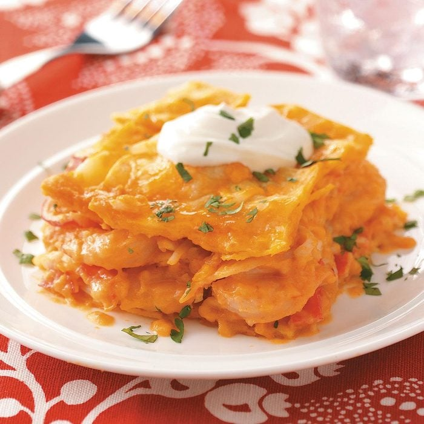

Davie Jones' Lasagna

My husband and I enjoy lasagna, seafood and Mexican fare. One evening, I
combined all three into this deliciously different entree. It certainly is a
tempting, memorable change of pace from traditional Italian-style lasagnas.
—Sharon Sawicki, Carol Stream, Illinois
- 1 jar (20 ounces) picante sauce
- 1-1/2 pounds uncooked medium shrimp, peeled and deveined
- 1/8 teaspoon cayenne pepper
- 1 tablespoon olive oil
- 4 to 6 garlic cloves, minced
- 1/3 cup butter, cubed
- 1/3 cup all-purpose flour
- 1 can (14-1/2 ounces) chicken broth
- 1/2 cup heavy whipping cream
- 5 corn tortillas (6 inches), warmed
- 1 package (16 ounces) imitation crabmeat, flaked
- 3 cups shredded Colby-Monterey Jack cheese
- Sour cream and minced fresh cilantro, optional
- Place picante sauce in a blender; cover and process until smooth.
Set aside. In a large skillet cook shrimp and cayenne in oil for about
3 minutes or until shrimp turn pink. Add garlic; cook 1 minute longer.
Remove and set aside.
- In the same skillet, melt butter. Stir in flour until smooth. Gradually add
broth. Bring to a boil; cook and stir for 2 minutes or until thickened. Reduce
heat. Stir in cream and picante sauce; heat through.
- Spread 1/2 cup of sauce in a greased 13x9-in. baking dish. Layer with six tortillas,
half of the shrimp, crab and sauce and 1-1/4 cups cheese. Repeat layers. Tear or cut remaining
tortillas; arrange over cheese. Sprinkle with remaining cheese.
- Bake, uncovered, at 375° for 30-35 minutes or until bubbly. Let stand 15 minutes before cutting.
Garnish with sour cream and minced cilantro if desired.